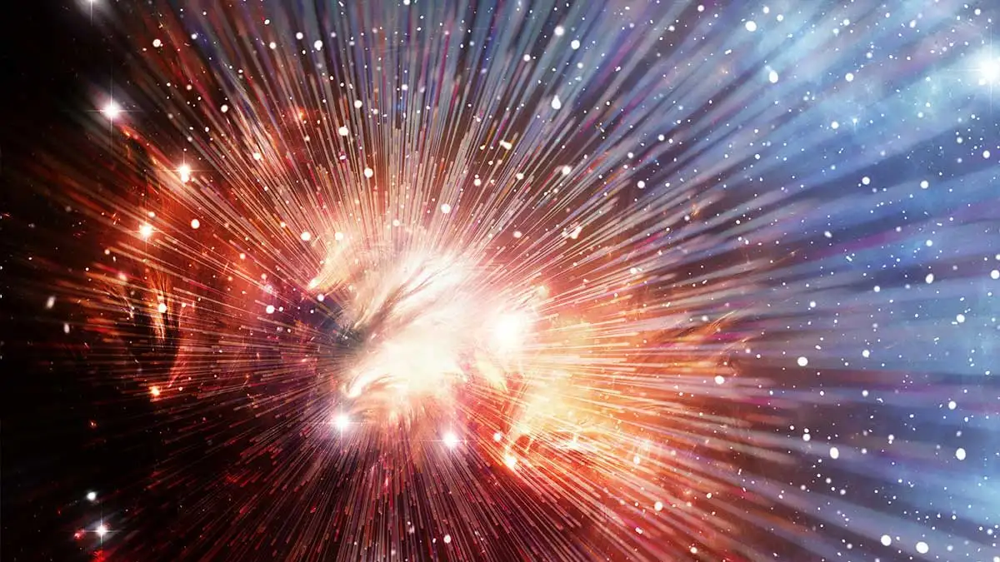

The universe began approximately 13.8 billion years ago from an extremely hot, dense singularity in an event known as the Big Bang. It has been expanding and cooling ever since, evolving from a particle soup into structured galaxies.
The Story
The origin of the universe is most widely explained by the Big Bang Theory, a scientific model describing how everything began from an extremely hot and dense state around 13.8 billion years ago. Rather than an explosion in space, the Big Bang was an expansion of space itself. In its earliest moments, the universe underwent rapid inflation, growing exponentially in size within a fraction of a second. As it expanded, it cooled, allowing fundamental particles to form, followed by simple atoms like hydrogen and helium.
Over millions of years, gravity caused these atoms to gather into clouds, eventually forming the first stars and galaxies. Inside stars, nuclear fusion created heavier elements such as carbon and oxygen—materials essential for planets and life. When massive stars died in supernova explosions, they scattered these elements across space, seeding the formation of new stars, planetary systems, and eventually galaxies like the Milky Way.
Our own solar system formed about 4.6 billion years ago from a cloud of gas and dust. On Earth, conditions eventually allowed life to emerge, leading to the complex diversity we see today. While the Big Bang Theory explains much about the universe’s early development, scientists continue to explore unanswered questions, such as what triggered the expansion and what existed before it—if “before” even applies.
In essence, the universe’s story is one of transformation: from a single, dense origin to a vast and evolving cosmos filled with stars, galaxies, and life.

Philosophical Questions
Why is there something rather than nothing?
Often called the "Fundamental Question". It challenges our assumption that "nothing" is the natural default state of the universe. Philosophers like Gottfried Wilhelm Leibniz argued that since "nothing" is simpler than "something," there must be a sufficient reason for the universe to exist. In contrast, many modern thinkers adopt the "Brute Fact" view, suggesting that the universe simply is, and seeking a cause outside of existence is a logical error.
Is our universe real?
The Simulation Hypothesis suggests that if computing power continues to grow, future civilizations will inevitably create "ancestor simulations" so realistic they contain conscious beings. Statistically, this implies we are more likely to be a line of code than a biological original.
However, this debate often returns to René Descartes’ foundational certainty: Cogito, ergo sum (I think, therefore I am). Even if the stars are projections and our bodies are data, the "realness" of the experience remains. Whether reality is a physical collection of atoms or a digital stream of bits, the subjective experience of consciousness acts as the only undeniable anchor of truth.
Why does time only move forward?
While the laws of physics are largely time symmetric, meaning they work perfectly well if the clock runs backward, our lived experience is strictly linear. This is largely explained by the Second Law of Thermodynamics, which states that entropy, or disorder, always increases in a closed system.
Time moves forward because the universe began in a state of extremely low entropy (the Big Bang) and has been "spreading out" and becoming more chaotic ever since. We remember the past and not the future because the act of recording a memory itself requires an increase in entropy. Thus, our perception of "flowing" through time is likely an evolutionary byproduct of a universe that is slowly, inevitably, moving toward equilibrium.